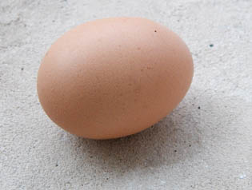

|
Les
liants font les
procédés
Un
autre type de présentation du sujet :
Les dialogues de
Dotapea, chap. I, Autour des liants
|
Le terme de liant
n'est pas réservé aux arts plastiques.
On le
retrouve en art culinaire, domaine
frère. Mieux : dans ces deux
disciplines, on utilise souvent les
mêmes
substances (huiles,
œufs, gélatines, dérivés lactiques,
farines et même certains pigments) et
l'on
exploite la même
fonction agglutinante (le terme d'agglutinant est
d'ailleurs parfois
employé dans le même sens dans ces deux
domaines).
Seuls les
produits trop
saturés
- ceux qui ne sèchent pas et ne se lient
à rien- ne sont généralement employés
qu'en cuisine et
surtout en mécanique, car la diététique
contemporaine nous apprend que les
huiles les plus saturées sont aussi
celles qui font enfler les chiffres du
plus mauvais cholestérol (le LDL), ce
que les cuisiniers n'ignorent plus.
En peinture, il
n'est pas faux, même si c'est un peu
simplificateur, de considérer le liant
comme une "colle à pigments et à
supports" donnant à la couleur une
viscosité qu'elle n'a pas naturellement
tout en la protégeant. Les chimistes
spécialisés contemporains semblent
cependant surtout attachés au fait que
le liant "mouille le pigment" (il faut parfois
l'aider pour cela avec des agents
mouillants). Il est effectivement très
important de mentionner qu'il autorise,
ce faisant, la constitution d'une
substance "plastique", malléable,
pouvant être posée sur une surface,
moulée, projetée ou placée dans un
récipient et manipulée par la suite avec
toute sorte
d'outils.
|
Des
pigments agglutinés par des liants qui
déterminent des procédés de peinture
Le mordant est à
la teinture ce que le liant est à la
peinture (article du glossaire)
Caractéristiques
propres aux liants
-
la base et le diluant
-
la
viscosité, l'adhérence et le tirant
-
séchage, siccativation
-
altération
de l'aspect consécutif au séchage
-
brillance,
rétention de brillant
-
résistance mécanique,
élasticité
-
permanence
-
réversibilité
-
thermosensibilité
-
capacité d'empâtement
-
étalement,
tendu, surfactant
-
transparence,
finesse, précision
-
perméabilité,
respiration
Les
colorants liants ou mordants
|
Par ailleurs, le
liant ne permet une adhérence que par l'intervention
d'un facteur extérieur : présence d'oxygène ou
cuisson (courante en peinture
industrielle ou dans les arts du feu). Il joue donc
le rôle d'intermédiaire non seulement avec le
support, mais aussi avec
l'environnement pris dans le sens le plus large,
intégrant l'action humaine
comme celle du soleil, de l'air, des siccatifs ou
des bactéries, ce qui nous incite à le
considérer comme médiateur.
Les premières peintures
rupestres connues (Tsodilo, Arnhem, Lascaux,
Chauvet, Altamira, etc.)
étaient souvent réalisées sans liant. La plupart
n'aurait pas résisté à une
exposition même brève à l'air libre. En Australie,
on commença très tôt (cf.
Anne Varichon) à utiliser le suc d'orchidée
sauvage, le jaune d'œuf,
la cire et divers produits d'origine
végétale comme liants. On mentionne l'emploi de
graisses animales au paléolithique en Europe.
Mais parmi
les tous premiers liants de grande efficacité, outre
l'œuf et la cire qui on fait leurs preuves, nous
citerons la gomme
arabique et probablement aussi la gomme de
merisier (que nous connaissons mal). Les huiles à
peindre n'apparaîtront que très
tardivement, bien après le jaune de l'œuf, sigle de
Dotapea.com, et une bonne
quantité de produits ayant démontré leur bonne
adaptation à des contextes
précis d'emploi pictural.

Des
pigments
agglutinés par des
liants qui déterminent les
procédés de peinture
Toute peinture est constituée au
moins :
*
de pigments
*
d'un, voire de plusieurs liants
qui mouillent et collent les pigments entre eux tout
en les faisant adhérer au support.
Un tube, un pot de
peinture ou d'encre, une cartouche de stylo, une
recharge de feutre, de la peinture-poudre industrielle,
c'est presque
toujours du pigment mélangé à du liant. Il est
généralement facile de se procurer ces deux éléments
séparément et de faire soi-même le
mélange (voir article "séparer
ou non
liants et pigments"). Sur la distinction entre
liants et colles, lire l'article consacré aux colles.
Chaque procédé de peinture réfère à
un liant
spécifique.
On parle de
"procédé à l'huile", de "tempera
à l'œuf, à la caséine
ou à la colle", de peintures
synthétiques, acryliques, vinyliques,
méthylcellulosiques,
de peinture
à fresque au mortier,
etc... En principe, c'est le liant qui va définir la
manière dont vous pourrez
peindre, les supports possibles, et surtout les types de
résultat que vous
serez susceptible d'obtenir.
Les seules exceptions sont les
liants qui sont en
eux-mêmes colorants
comme le graphite ou la craie naturelle, généralement
utilisés en dessin
car par définition ils rendent impossible le
polychromatisme sinon en jouant
sur un fond coloré ou sur des techniques mixtes. Voir
plus loin Les
colorants liants ou mordants.
Le
mordant est à peu près à la
teinture ce que le liant est à la peinture
Lire à ce sujet l'article Mordant
du glossaire.
Caractéristiques
propres
aux liants
La
base et le diluant
Aqueuse, oléagineuse, encaustique,
cétonique, etc., nommée ainsi
en fonction tantôt de la nature du liant
(ex. : peinture à l'huile), tantôt de celle
de son produit diluant (ex. : peintures aqueuses ou
détrempes).
Certaines peintures ont une double base
chimique (lire Les
émulsions), à la fois aqueuse et grasse et
autorisent éventuellement l'emploi
de deux diluants de natures différentes.
La
viscosité,
l'adhérence et le tirant
On l'a dit : un liant est une sorte
de colle dont l'action s'exerce à la
fois sur le pigment et le support.
La viscosité
(sur ce mot, lire absolument
l'article du glossaire) de cette "colle" dépend
d'un grand nombre
de facteurs qui ont été l'objet de recherches et
d'expériences depuis la préhistoire. Elle
interagit avec d'autres facteurs comme l'aptitude à la siccativité du liant, mais
aussi du pigment. Il existe des viscosités à la fois
lentes et très puissantes,
donnant un résultat très solide, comme dans le cas de l'huile
de lin. A proprement parler, pour le peintre,
l'artiste, le concept de
viscosité n'est pas le plus utile. Celui de "tirant"
est peut-être plus précis bien qu'il se comprenne
intuitivement et par la manipulation, pas en tant que
concept scientifique. Il recouvre certainement d'autres
phénomènes physico-chimiques.
Notamment, la manière dont le liant
s'étire, englobe le pigment ("sa manière d'être
visqueux") détermine ce type de facteurs. L'aquarelle
semble enrober presque
chaque grain de pigment tandis que l'huile et
l'acrylique les piégent dans leur
propre masse. Voir plus loin Transparence,
finesse,
précision.
L'adhérence au
support est essentielle bien sûr. Il
faut d'ailleurs distinguer
l'adhérence du liant pur, par exemple utilisé comme
enduit, de celle de la
peinture, toujours inférieure à cause de la présence du
pigment qui, lui, n'a
que peu de viscosité.
L'adhérence
humide est un concept technique de la
peinture
décorative. Il s'agit de l'adhérence sur support humide
et/ou en atmosphère
humide. Il est intéressant car il autorise certains
procédés plastiques
par modification du support. L'eau annulera
temporairement, localement ou
globalement, l'adhérence de la peinture à l'huile.
Pendant ce temps, des
choses deviennent possibles.
A l'inverse, le même principe peut être
appliqué à l'aide un corps gras
qui altèrera l'adhérence d'une peinture aqueuse (le
retrait de corps gras
créant cependant des difficultés plus importantes).
Le
tirant est la
viscosité d'une pâte à peindre, mais c'est surtout pour
le peintre une sensation "mécanique" bien réelle, bien
sensible, qui peut changer au cours d'une séance, à
mesure que le diluant s'évapore. Cela se ressent comme
une résistance concrète.
Certaines colles semblent presque "tirer
de leur côté" tant elles sont visqueuses. On dira donc
que le tirant est avant tout la sensation de la
viscosité avant d'être un synonyme banal de celle-ci.
Séchage
et siccativitation
La distinction entre ces deux termes est
explicitée dans un
article du glossaire.
Pour faire court et simple, on n'évoquera
ici que le terme de
"siccativité" entendu comme aptitude d'un liant à se
solidifier.
La siccativité d'un liant peut être :
* nulle
(œuvres restant à l'état liquide, à l'horizontale,
difficiles à conserver)
* totale,
mais plus ou moins lente en fonction de la nature
chimique de la pâte, de son épaisseur et de sa
dilution
* ou réversible
(cires, colle
de peau, gouache).
Altération
de l'aspect lors du séchage ou de la siccativation

Un liant peut se présenter pur, comme
l'huile de lin, ou pré-dilué, comme
le liant acrylique qui comporte à peu près une moitié
d'eau (en volume, voir extrait
sec). Parfois, la
quantité de diluant nécessaire à l'utilisation du
produit est considérable,
comme dans le cas de la gomme
laque (ci-contre). A
l'opposé, un tube de peinture à l'huile ne contient pas
d'essence et un godet
d'aquarelle est sec.
Naturellement, la présence de diluant
(incorporé ou ajouté) implique
nécessairement un retrait au
séchage, mais en
fonction de la manière dont le liant se polymérise -
particulièrement la
rapidité et l'homogénéité de ce phénomène -, la pâte
conservera plus ou
moins son volume initial.
La base chimique du liant détermine la
type de diluant utilisable, mais
aussi l'aspect pictural final moyen d'une peinture. La
gomme laque décirée et
les peintures oléagineuses sont probablement les liants
autorisant le résultat sec le plus
semblable à l'œuvre fraîche. Cependant, dans tous les
cas une règle demeure
: lorsque le diluant est très présent (jus,
glacis,
lavis), le volume diminue
beaucoup au séchage. Une
coulure qui semble épaisse lorsqu'elle est fraîche
paraît souvent bien mince
à sec.
Brillance,
rétention
de brillant
La brillance est dans l'ensemble l'apanage
des liants purs. Pigmentés, tous
deviennent plus mats.
Mais un liant ou une peinture (liant +
pigment + adjuvant éventuel) peut
évidemment présenter une brillance.
Dans certains cas, notamment lorsqu'une
peinture est exposée à l'air libre,
à l'extérieur, ce brillant peut s'éteindre. A l'inverse,
la "rétention
de brillant" correspond à une propension à la
conservation de ce
caractère malgré le temps et les intempéries.
Résistance
mécanique,
élasticité
Elle dépendent
-
de la concentration en liant et en
adjuvants (diluer une peinture sans adjuvant
visqueux, c'est la fragiliser). Certains adjuvants
comme la glycérine et différents liants synthétiques
augmentent l'élasticité des peintures à l'eau.
Certaines résines utilisées en peinture à l'huile
rendent celle-ci plus résistante tant dans le
contexte de la conservation (tout pigment mal
protégé réagissant au contact de l'air et des
ultraviolets) que dans celui de la réticulation,
lors du séchage, où se posent aussi des problèmes
mécaniques, de mouvements non homogènes
particulièrement, notamment à l'échelle
macromoléculaire et, consécutivement, à notre grand
effroi, à l'échelle de notre acuité visuelle.
-
de la résistance propre du liant et de
sa densité dans la pâte. Les liants élastiques comme
l'acrylique et le vinyle tolèrent davantage de types
de supports que la caséine ou la chaux qui sont plus
rigides
-
du bon choix et de la bonne
préparation du support : liant souple pour
support souple, liant souple ou dur pour support
dur. Un support mal préparé, une peinture ou un
enduit mal choisi, ce sont les cauchemar des
restaurateurs, des conservateurs de musées, des
collectionneurs et de tous les amateurs d'art, comme
quelques visites dans différents musées peuvent nous
en convaincre.
Permanence :
colorations intempestives (jaunissement,
blanchiment, noircissement
), résistance générale
* la
coloration inopportune d'un liant est parfois
réversible (voir huile de
lin)
* une
coloration plus durable peut se produire à la suite de
mauvais mélanges ou d'applications sur des supports
inadéquats (acides, par exemples, ou soufrés, lorsque
la peinture étendue par-dessus est mêlée de plomb)
* elle peut
être liée à certains points faibles du liant
(ex. : tendance de l'huile de noix à rancir - ou
réputation de) ou bien à la trop faible proportion de
liant par rapport au pigment : c'est le problème
de l'aquarelle
notamment, peinture exploitant au maximum les
possibilités de dilution de la gomme arabique. On a
déjà vu des tableaux "s'écrouler" littéralement par
plaques de pigments trop peu liés
* la
question de la résistance est souvent en rapport avec
la réversibilité. Une peinture permanente doit
résister à l'action de ses solvants (surtout lorsqu'il
s'agit de peintures aqueuses). De plus, elle doit
aussi se confronter avec succès à l'air ambiant,
l'humidité, les polluants, la température, les
ultraviolets, les bactéries, etc.
A lire absolument :
Longévité
des peintures in
Courrier des
Lecteurs.
Réversibilité
C'est l'aptitude d'une peinture (ou d'un
autre produit, une colle par exemple) qui a séché à se
remettre en solution en
présence de ses solvants normaux. La gouache est
réversible mais pas l'acrylique
ni l'huile. Une aquarelle de qualité n'est pas censée
être très réversible.
La caséine, par contre, est réversible dans un premier
temps, puis
pratiquement plus jamais.
La réversibilité d'une peinture n'est pas
sans rapport, dans certains cas, avec son aptitude à
se saponifier. La
plupart des liants étant des
esters, ils peuvent en effet réagir à une base, à de
l'eau ou a fortiori à
une eau alcaline comme le sont de nombreuses eaux du
robinet.
Une peinture à l'eau serait généralement,
dit-on, moins réversible dans une
atmosphère chaude. Information non vérifiée.
A l'inverse de la réversibilité se
trouvent la lavabilité et la
lessivabilité, propriétés des peintures résistant au
lavage, voire à une
certaine action abrasive. L'acrylique est lavable,
l'huile un peu moins, mais ce
sont surtout les peintures décoratives comme la glycérophtalique,
les différents alkydes, les
polyuréthanes
et encore davantage les peintures-poudres et autres
procédés industriels ainsi
que les
émaux qui sont
représentatifs de cette faculté de résistance à la
réversibilité.
Thermosensibilité
La sensibilité à la chaleur définit une
forme de
"réversibilité" qui est
particulièrement déterminante pour les
peintures dans lesquelles les cires sont
présentes.
Lorsqu'une cire refroidit, elle coagule.
C'est très rapide, cela permet
de bloquer certains mouvements mécaniques indésirables.
Mais solidifiée, une
cire devient un solide cassant, fragile.
Lorsqu'elle chauffe, elle se liquéfie,
provoquant sans délai des accidents irréversibles.
Il est donc important d'employer les
produits thermosensibles à bon escient.
Tout particulièrement, les appareils d'éclairage trop
rapprochés sont des
dangers potentiels.
Lire Les
cires comme adjuvants, Les
cires, l'encaustique.
Capacité
d'empâtement
Sauf techniques très spéciales, seules
l'acrylique et l'huile permettent l'empâtement, sous
certaines
conditions. Des auxiliaires sont quand même généralement
indispensables à partir
d'une épaisseur de l'ordre de deux ou trois millimètres
tout au plus.
Le mortier à fresque et surtout le plâtre
peuvent-ils être considérés comme
empâtant ? Plus ou moins, on dira plutôt que ce
sont des liants
"plastiques".
Étalement,
"tendu",
surfactant
Voir absolument Tension,
tension superficielle, tensioactif.
Sur le concept de surfactant,
lire
définition in Les dialogues de Dotapea, chap. I, A
propos des liants.
Le concept d'étalement ne doit pas être
confondu avec celui de dilution.
Une peinture très "diluable" comme l'aquarelle
n'est absolument pas "étalée" au sens de "tendue".
Alors qu'entend-on par ces termes ?
Une peinture peut, par sa nature et
celle de son diluant,
avoir tendance ou non à s'étaler sur le support à
peindre et à former
rapidement une surface homogène où le coup de pinceau
ne laisse pas
d'empreinte, comme dans le cas typique de la gomme
laque.
Dans les domaines des arts plastiques ou
décoratifs, le terme "tendu" correspond à peu près
semble-t-il - et sous toute réserve - au concept
physico-chimique de tensioactivité.
La standolie
en peinture à l'huile et les diffuseurs
en peinture acrylique permettent d'accroître le tendu.
Plastiquement parlant, une peinture tendue
ou rendue telle permet des
transitions très homogènes, très "lisses", des aplats,
mais aussi
des flous.
Lire aussi
passage in Les dialogues de Dotapea, chap. I, A
propos des liants.
Transparence,
finesse,
précision
Ces propriétés sont le propre des
peintures plutôt fluides ou rendues fluides,
diluées (voir Diluants,
solvants, dissolvant
: concepts physico-chimiques).

Certains liants sont en eux-mêmes
grossiers, presque granuleux. D'autres
sont fins mais flous. La précision n'est pas toujours au
rendez-vous. Elle est
non seulement inhérente au liant, mais aussi au diluant.
Par exemple l'alcool,
diluant de la gomme laque de
Coromandel (photo
ci-contre), ne peut autoriser une précision comparable à
celle que l'on
obtient avec un liant moyen dilué dans l'eau ou dans
l'essence. Par contre, la
transparence de cette laque est devenue légendaire.
Ces trois
caractéristiques, transparence, finesse
et précision, ont largement déterminé l'emploi des
liants. Un
liant fin comme la gomme laque de Coromandel nécessite
un haut degré de technicité
pour obtenir la précision que d'autres liants autorisent
bien plus aisément.
Ce n'est donc pas un hasard si la laque n'est
pratiquement jamais employée en
peinture alors qu'elle est courante en ébénisterie. Les
propriétés
intrinsèques de la laque peuvent cependant être mises à
profit à bon escient
dans le domaine artistique.
Perméabilité,
respiration
Une peinture perméable n'est pas seulement
une peinture qui laisse passer à
travers elle d'autres matières. Pour mériter l'épithète
"perméable", elle doit aussi supporter d'être
traversée.
Autrement dit, une peinture perméable ne
se dilue pas, ne se dissout pas.
Le liant perméable le plus exemplaire est
certainement la
chaux.
Une gouache, si elle laisse passer
l'humidité, s'en émeut cependant, se
diluant au passage.
A l'opposé, les liants tels que
l'acrylique, le vinyle, l'huile de lin ou la
gomme laque ne laissent rien passer. Ces peintures sont
imperméables et ne
laissent pas les supports respirer.
Les
colorants liants ou mordants

Ce sont des cas particuliers plutôt rares.
Quelques exemples :
Le graphite est à la fois
un liant et un pigment.
Le curcuma (photo
ci-contre) est un colorant
substantif utilisé en
teinturerie.
Le noir de noix
de galle est également un colorant tinctorial
substantif et il a été utilisé dans la fabrication
d'encres.
Retour
début de page
|